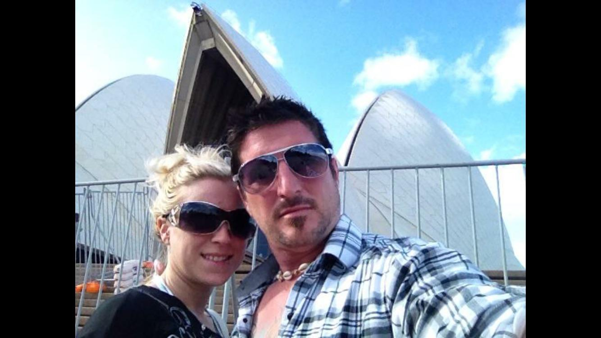
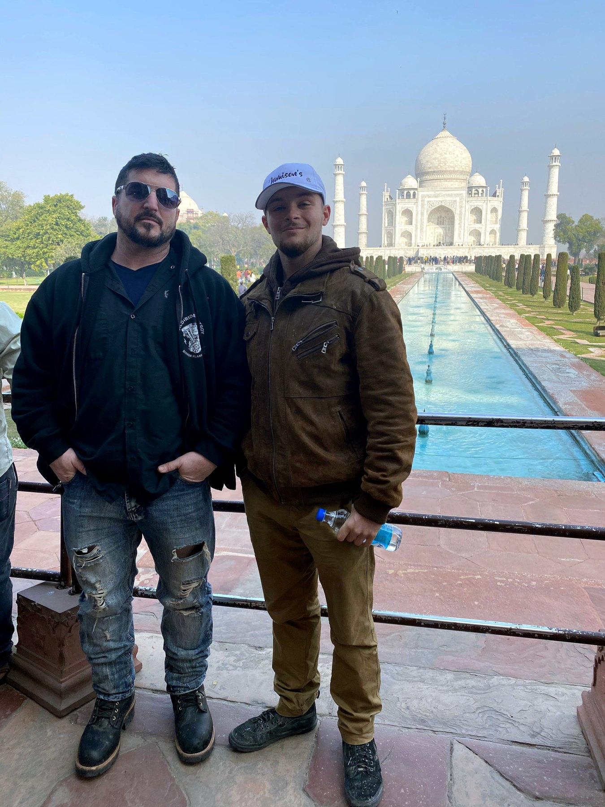
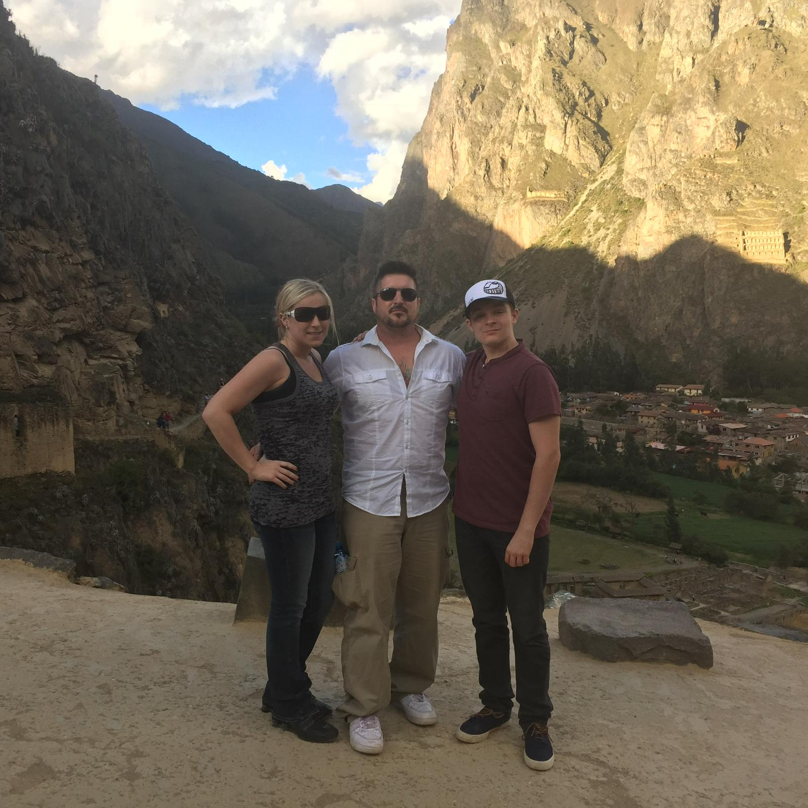
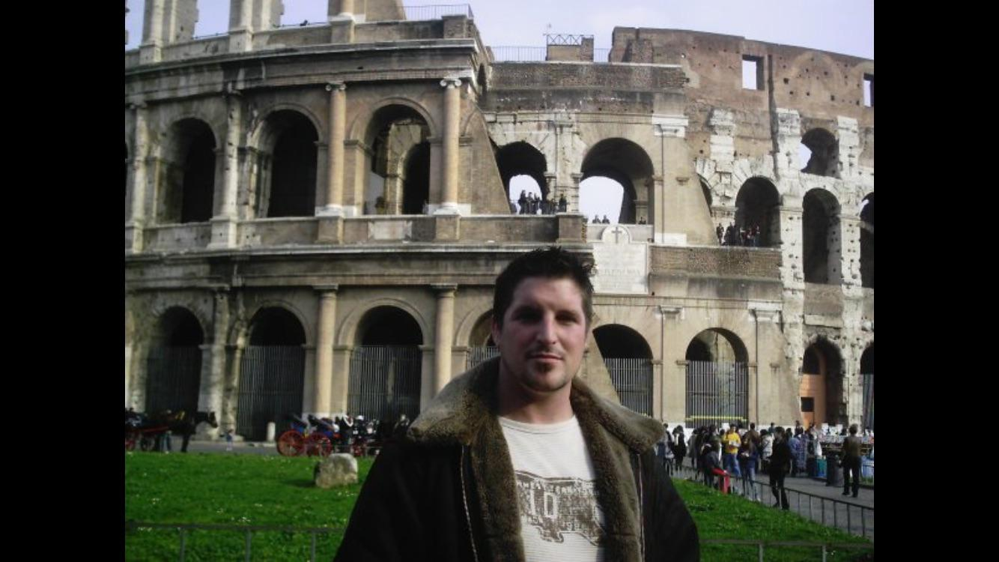
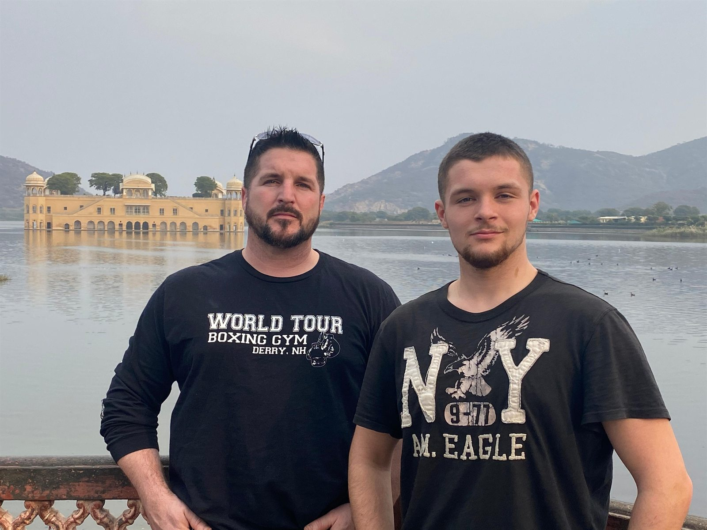
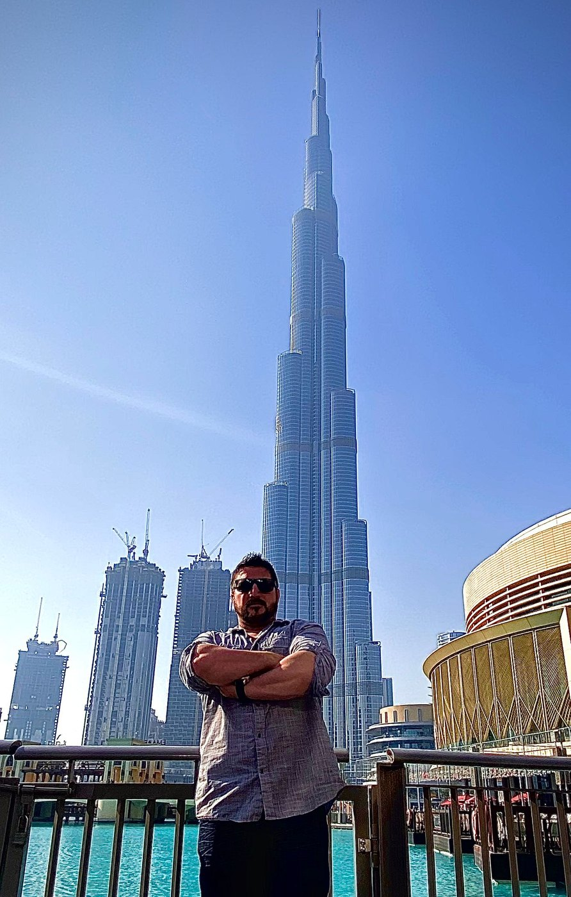
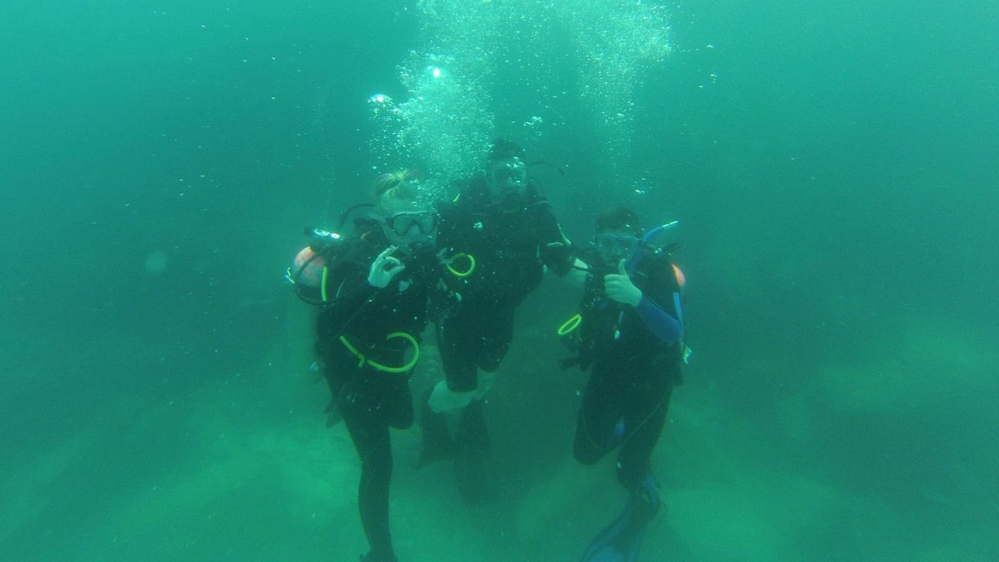

Recognizable destinations across continents.

International travel and exploration
World landmarks, ancient places, and family adventures.
Barry Billcliff's travel archive separates the world-travel story from the main profile: Peru, Egypt, India, Chile, Australia, Dubai, Italy, England, diving, rafting, and historic sites across continents.
History, archaeology, and cultural travel context.
Family travel, diving, rafting, mountains, and exploration.
World Landmarks
A focused travel identity.
This site is built around international travel rather than biography alone. It highlights recognizable landmarks, ancient sites, cultural stops, scenic overlooks, and family travel moments that reinforce curiosity, movement, and global experience.
Ancient Sites
Giza, Stonehenge, Easter Island, India, Rome, and archaeology-focused images anchor the historical travel section.
Landmark Travel
Sydney, Dubai, Machu Picchu, the Taj Mahal, and the Colosseum create immediate visual recognition for search and visitors.
Adventure
Scuba, rafting, mountain routes, and outdoor travel add movement and personality beyond static landmark photos.
Selected Travel Images
International Travel Archive








Travel Policy
Use the strongest images, not every image.
The `.org` archive should stay selective: clear landmarks, travel context, family-safe adventure, cultural sites, and historical settings. It should avoid duplicating every social image from the main `.com` profile.